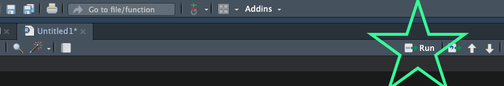

Débuter sur R : Les 6 erreurs les plus fréquentes
Je me souviens de mes débuts avec R : j’étais très enthousiaste, mais les erreurs dans mon code étaient si fréquentes que j’ai failli abandonner. Parfois, je préférais même continuer sur Excel, tout en sachant que cela me prendrait beaucoup plus de temps que de simplement corriger mon code !
Si cette situation vous semble familière, rassurez-vous : vous n’êtes pas seul. La plupart des erreurs sur R proviennent d’une poignée de problèmes récurrents.
Voici 6 des erreurs les plus courantes et, bien sûr, les solutions pour les éviter.
1. Commencez avec des données bien formatées
Avant d’écrire la moindre ligne de code, assurez-vous que vos données sont correctement structurées. Des noms de colonnes désordonnés, des cellules fusionnées, des formats incohérents ou des types de données mixtes au sein d’une même colonne sont la recette idéale pour passer des heures à déboguer plus tard. Un ensemble de données propre et bien rangé dès le départ vous fera gagner beaucoup plus de temps qu’il ne vous en aura coûté à préparer.
Essayez de suivre ces règles :
Une ligne = un individu statistique (une personne, un objet d’étude, etc.).
Une colonne = une variable = une information.
Pas de cellules fusionnées ! Oubliez les réflexes d’Excel, s’il vous plaît !
2. Attention aux noms (et à ce que vous avez réellement exécuté)
L’une des sources d’erreur les plus fréquentes (et les plus négligées) est la mauvaise orthographe d’une fonction, d’une variable, d’un jeu de données ou d’un nom de package. Si vous êtes certain d’avoir tout orthographié correctement et que vous obtenez malgré tout le message "object '...' not found", vérifiez d’abord une chose : avez-vous réellement exécuté le code qui définit cet objet ?
Voici la règle d’or à retenir : écrire du code dans un script R ne signifie pas qu’il a été exécuté. Contrairement à la console, un script ne tourne que lorsque vous cliquez sur “Run” (ou utilisez le raccourci clavier). Tant que ce n’est pas fait, R n’a aucune idée de l’existence de cet objet.

3. Écrivez votre code dans un script, pas dans la console
Taper du code directement dans la console peut sembler rapide et tentant, surtout pour des vérifications ponctuelles. Cependant, ce n’est pas une bonne habitude pour un travail sérieux, car rien de ce que vous y exécutez n’est sauvegardé. La meilleure approche consiste à écrire votre code dans un script R. En l’exécutant depuis le script, vous pourrez sauvegarder votre travail, le rejouer plus tard et le partager avec d’autres (y compris avec votre “moi futur”, qui vous en remerciera).
4. Vérifiez les parenthèses, crochets ou guillemets manquants
Une simple petite erreur de frappe peut paralyser l’intégralité de votre script. Parmi les coupables les plus habituels, on retrouve l’oubli d’une parenthèse fermante ), d’une accolade }, d’un crochet ] ou de guillemets. C’est malheureusement une question de vigilance pour les détecter. En général, R essaie de vous alerter, mais vous devez rester très attentif !
5. Apprenez à lire les messages d’erreur de R
Les messages d’erreur de R peuvent sembler cryptiques au début, mais la plupart d’entre eux tentent de vous dire quelque chose de très précis. Voici un guide rapide des messages que vous rencontrerez le plus souvent :
"could not find function '...'": Cela signifie généralement que le package n’est pas chargé ou que vous avez mal orthographié le nom de la fonction. Par exemple, taperboxsplot()au lieu deboxplot()déclenchera exactement cette erreur."object not found": L’objet auquel vous faites référence n’existe pas encore ou est vide (voir le conseil n°2)."cannot open the connection": Cela traduit souvent deux situations : soit R ne trouve pas le fichier (souvent une faute de frappe dans le chemin d’accès), soit un package n’a pas pu être chargé car une dépendance système est manquante."non-numeric argument to a binary operator": Vous mélangez les types de données dans un calcul, comme essayer de faire des mathématiques avec un nombre et une chaîne de caractères.
Une dernière chose à garder à l’esprit : R est sensible à la casse (majuscules/minuscules). Pour R, Data et data sont deux objets totalement différents — un petit détail qui cause un nombre surprenant de maux de tête.
6. Gardez votre répertoire de travail organisé

Un répertoire de travail en désordre complique absolument tout : trouver des fichiers, appeler des scripts, charger des données. Prenez le temps d’organiser le dossier de votre projet dès le départ. Créer des dossiers distincts pour les données brutes, les scripts et les résultats vous évitera bien des erreurs du type "cannot open the connection".
Le débogage fait partie intégrante de l’apprentissage de R, et même les utilisateurs expérimentés rencontrent ces erreurs régulièrement. La différence réside simplement dans la capacité à lire le message et à savoir où chercher. Au bout du compte, c’est la pratique qui vous permettra de tout maîtriser ! Ne vous inquiétez donc pas : plus vous écrirez de scripts, plus vous apprendrez de vos erreurs !
Vous souhaitez un accompagnement personnalisé pour résoudre vos erreurs R et mener à bien vos analyses ? Je propose des formations et du coaching individuel en R et en analyse de données, adaptés à vos données et à vos objectifs.
Contactez-moi pour planifier une session !
References :
Camila Vargas Poulsen, Casey Ohara, Shayna Sura (2024), NCEAS coreR for Delta Science Program, October 2024, NCEAS Learning Hub. URL https://learning.nceas.ucsb.edu/2024-10-coreR.
Antoine Soetewey’s Stats and R blog at : https://statsandr.com/
Ce post a été co-écrit avec Claude (l’IA d’Anthropic), à partir de mes idées originales et de mon expérience personnelle.